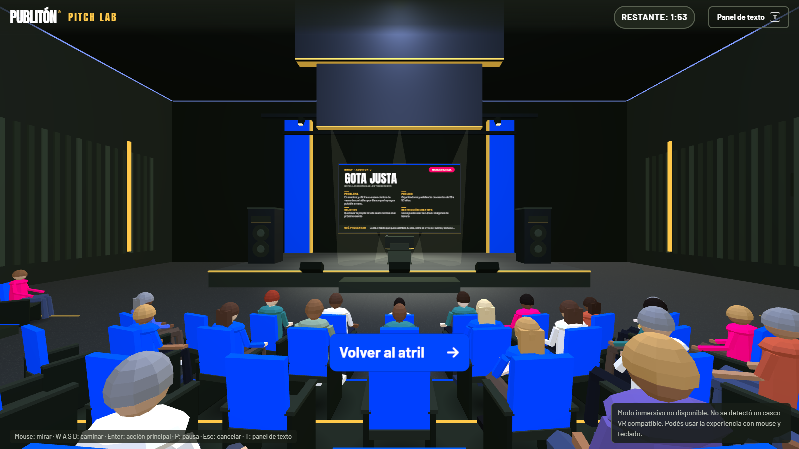
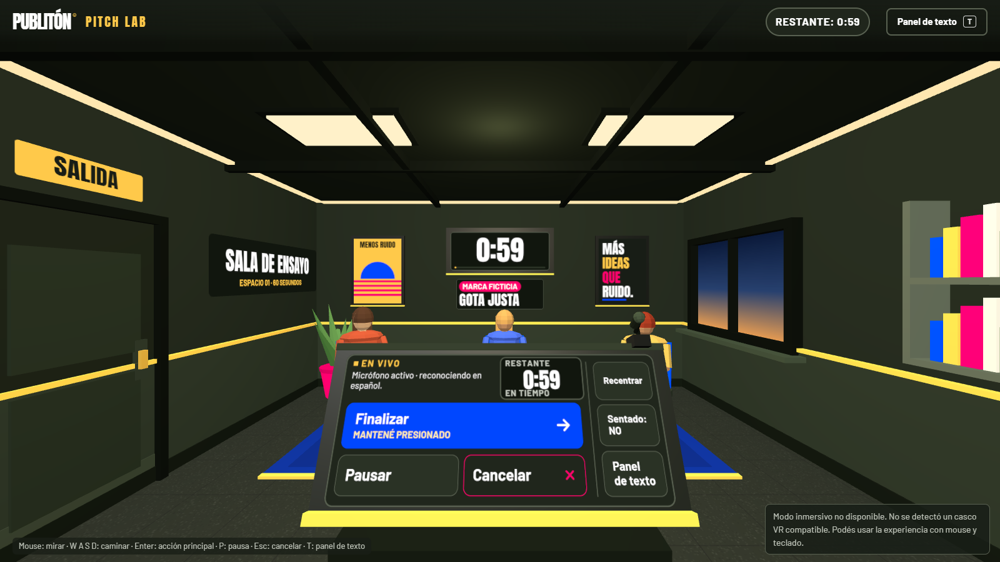
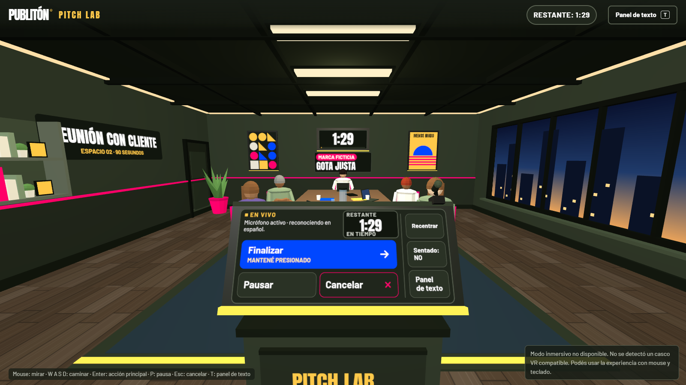
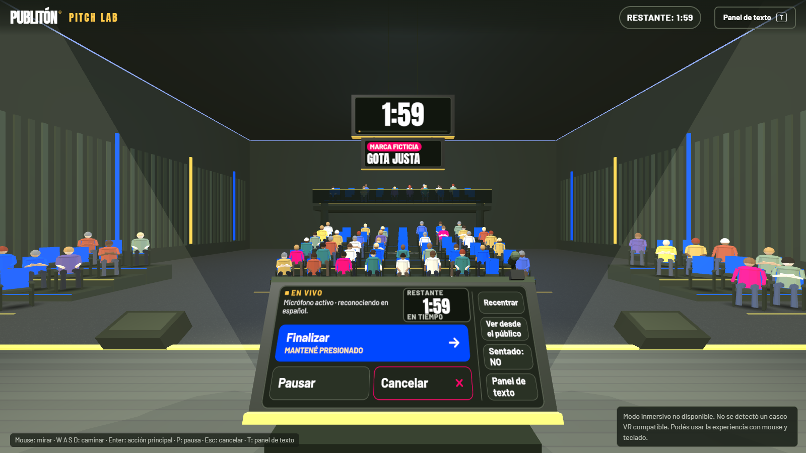
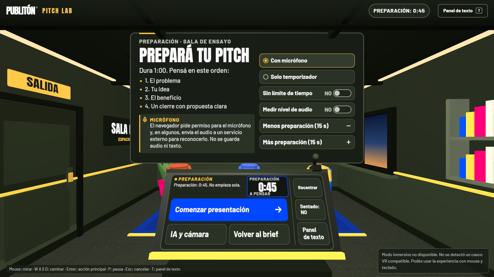
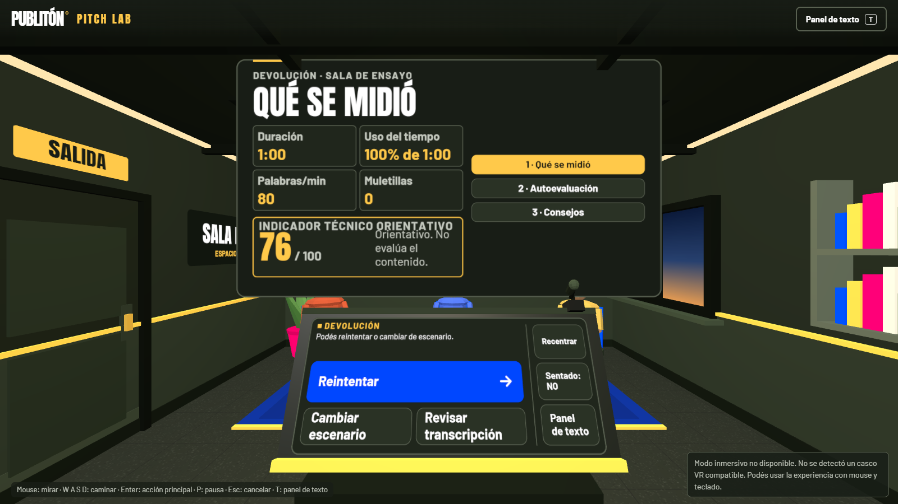

TP4 · DISEÑO · EXPERIENCIA INMERSIVA VR (WebXR)
Tu idea merece un buen pitch.
Simulador de presentación de ideas publicitarias.
Complemento inmersivo del evento Publitón — Hackeando el mensaje.
Fiscina · Fuentes · Diaz · Tana | 2026
01 / Problema y oportunidad
Publitón lleva a las personas del brief al pitch. Pero el momento de defender la idea en voz alta es el que menos se puede practicar antes del evento.
Un espacio donde ensayar la defensa de una campaña sin que nadie juzgue, con control del tiempo y una devolución concreta para repetir.
Esta formulación del problema es una hipótesis del equipo a partir del concepto del evento. No se hicieron entrevistas ni pruebas con personas usuarias: la validación está pendiente (ver diapositiva 3).
02 / Relación con Publitón y el público
Participantes de Publitón que necesitan presentar y defender ideas creativas, solos o en equipo de 4–5 personas.
En el repositorio no hay User Personas documentados. No se inventaron entrevistas. Siguiente paso: alinear con las personas de los TPs anteriores o hacer 3–5 pruebas de uso. Detalle: docs/usuarios-hipotesis.md
03 / Idea y alcance
04 / Referentes (1 de 2) · consultados el 2026-11-04
virtualspeech.com/about
Entrenamiento ante una audiencia virtual: del pitch 1 a 1 a un escenario de conferencias. Práctica en navegador, tablet o casco. Puntajes y debrief con un coach de IA.
Tomamos: ensayar ante una audiencia simulada y que funcione también en pantalla.
Distinto: la IA es opcional y se rotula como interpretación; sin puntajes de calidad; lo medido va separado de lo interpretado.
Reseña: roadtovr.com/ovation-vr-public-speaking-training-simulator
Escenas desde una sala de reuniones hasta un salón de conferencias; herramientas dentro del espacio (puntero láser, control de presentación); devolución sobre muletillas, mirada y manos. Menús con láser «poco pulidos» según la reseña.
Tomamos: escala distinta + herramientas en el espacio.
Distinto: no medimos mirada ni manos; botones grandes.
support.microsoft.com (Rehearse with Coach)
Devolución sobre ritmo, muletillas y más; informe de ensayo con estadísticas y sugerencias. Es una función en la nube: las emisiones de voz se envían a Microsoft; pide micrófono, conexión y cuenta.
Tomamos: informe con medidas concretas y declarar qué se envía antes de activar el micrófono.
Distinto: sin cuenta, sin guardar nada.
04 / Referentes (2 de 2)
MDN · Web Speech API (el audio puede enviarse a un servicio web en algunos navegadores)
API de Gemini (documentación oficial, aistudio.google.com/docs) · MediaPipe Hand Landmarker (Google)
A-Frame 1.8.0 (three.js r184) · WebXR Samples (immersive-web.github.io)
No se reutilizaron imágenes de terceros. Para llevar el informe a Figma, el equipo debe sumar una captura por referente, con cita y enlace:
Detalle y análisis completo: docs/referentes.md
05 / Por qué VR
Funciona igual con mouse y teclado: la VR es un complemento, no un requisito.

06 / Recorrido
07 / Diseño espacial · 1 de 3
Para aprender la mecánica sin presión.

07 / Diseño espacial · 2 de 3
Cercanía: foco en problema, propuesta y beneficio.

07 / Diseño espacial · 3 de 3
Animaciones discretas; sin abucheos ni reacciones humillantes.

08 / Mecánica central
Computadora: mouse + W A S D, Enter, P, F, Esc, R, T.
VR: rayo del control + gatillo, marcas de teletransporte, joystick para girar por tramos, «Recentrar», «Sentado», altura de la vista y vibración ajustables, «Salir de VR». «Finalizar» pide mantener presionado. Sin desplazamiento continuo.

09 / Devolución transparente
Confianza, ansiedad, emociones, contacto visual, persuasión ni calidad del discurso.

10 / Identidad y accesibilidad
ANTON para títulos y Barlow para texto: archivos locales del sitio, sin fuentes remotas. Señalética integrada al espacio (cartel de sala, «Salida», «Atril»).
Falta una auditoría automática de contraste (pendiente).
11 / Arquitectura
core/state-machine.js · session.jscore/metrics.js · feedback.jsvoice/* · ai/*core/screens.jsscenes/* · components/stage-controller.jsui/* · components/xr-support.js (xr-ray)A-Frame 1.8.0 incluido (sin CDN) · sitio estático para GitHub Pages · 183 pruebas de unidad, 32 de navegador real, 13 con emulador WebXR y una auditoría de legibilidad del texto 3D. Detalle: docs/arquitectura.md
12 / Bitácora de prompts
Encargo inicial completo a Claude Code (modelo Sonnet 5.5): construir, probar, documentar y publicar la experiencia de forma autónoma, sin inventar evidencia.
Texto íntegro en docs/prompts/01-encargo-inicial.md. Fue el único prompt de esa sesión: no hubo preguntas intermedias.
Informe en Figma (pendiente), ver el juego sin VR y el análisis real del audio con IA y cámara: docs/prompts/02-analisis-con-ia.md (la clave pegada en el chat se omite).
13 / Problema real resuelto
Al ir del hub a una sala y volver, las geometrías en la GPU crecían 12 por cada ida y vuelta.
Causa: los pedestales de las maquetas (4 geometrías × 3) no se registraban para liberarse.
Solución: registrarlos con kit.track() en scenes/maquette.js.
Comprobación: la prueba «recursos 3D» pasa: 84 → 85 al volver.
Antes del arreglo
Después del arreglo
Otros problemas reales (8) en docs/problemas-resueltos.md.
14 / Intervención manual del equipo
La modificación a mano la hace el equipo. La herramienta solo dejó una guía; no aplicó ningún cambio ni lo presenta como hecho por estudiantes.
Propuesta A: aviso de tiempo proporcional a la duración del escenario (js/core/time-warnings.js). Alternativas: una regla de devolución o una mejora de accesibilidad.
Guía: docs/intervencion-manual.md
— completar con el fragmento original, archivo y líneas —
— completar con el cambio hecho por el equipo, motivo y cómo lo comprobaron —
15 / Pruebas y limitaciones
| Nivel | Resultado |
|---|---|
| Pruebas de unidad | 183 / 183 |
| Navegador real (Edge 156, mouse y teclado, 60 s reales) | 22 / 22 |
| IA y cámara en navegador real (Gemini simulado, micrófono y cámara falsos) | 10 / 10 |
| Modo inmersivo con emulador WebXR | 13 / 13 |
| Texto 3D: ninguno bajo 0,8° (medido) | OK |
| Rutas de GitHub Pages y sitio anterior | OK |
Detalle: docs/pruebas.md
16 / Enlace de la experiencia
El enlace y el QR se agregan solo cuando la publicación existe y fue verificada.
node tools/serve.mjs y abrir localhost:8080/pitch-lab/17 / Próximos pasos